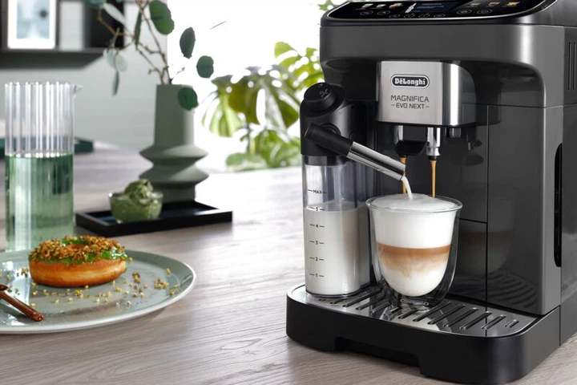
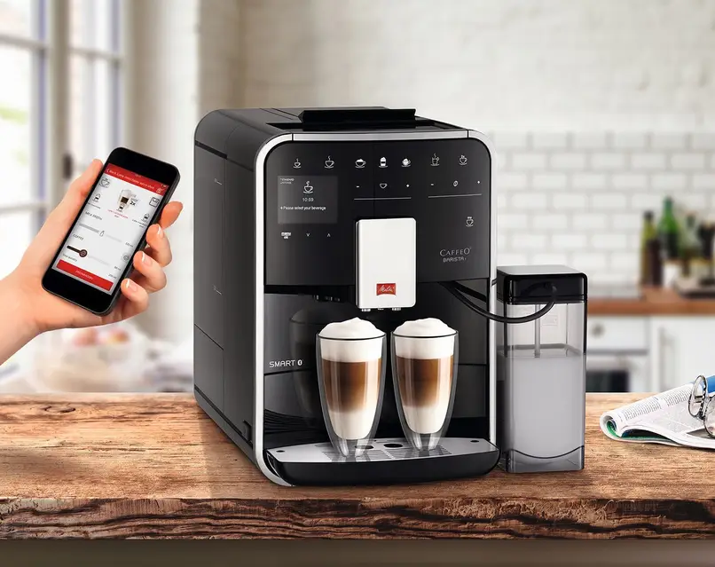
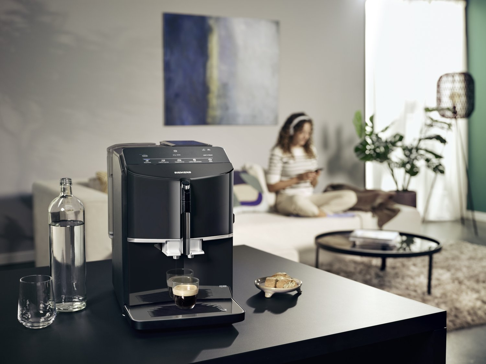
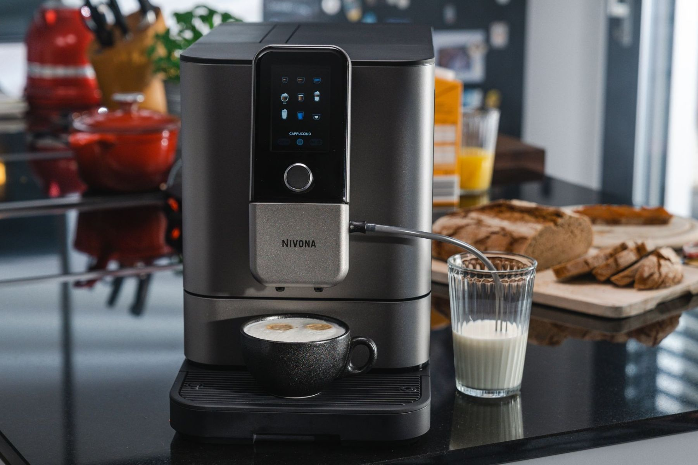

01
Наш досвід
Ми працюємо з побутовими, професійними та офісними кавомашинами різних виробників. Виконуємо профілактику, технічне обслуговування та складний ремонт електроніки.
BlackCoffe — це команда спеціалістів, яка займається ремонтом, діагностикою та обслуговуванням автоматичних і професійних кавомашин. Ми допомагаємо повернути техніку до справного стану, використовуючи якісні комплектуючі та сучасне обладнання.
років досвіду
відремонтованих кавомашин
уваги до якості

Ми прагнемо зробити так, щоб кожна кавомашина працювала надійно та готувала смачну каву щодня.
Ми працюємо з побутовими, професійними та офісними кавомашинами різних виробників. Виконуємо профілактику, технічне обслуговування та складний ремонт електроніки.
Перед ремонтом проводимо діагностику, пояснюємо причину несправності, погоджуємо вартість і повідомляємо клієнту про основні етапи роботи.
Використовуємо перевірені комплектуючі та професійне обладнання. Після ремонту перевіряємо роботу кавомашини перед видачею клієнту.
Обслуговуємо популярні марки кавомашин для дому, офісу та бізнесу.





Зв’яжіться з нами, щоб обговорити діагностику та ремонт.